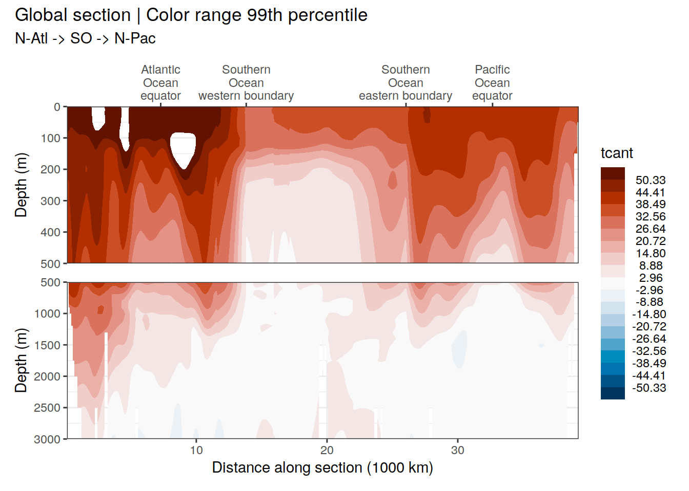
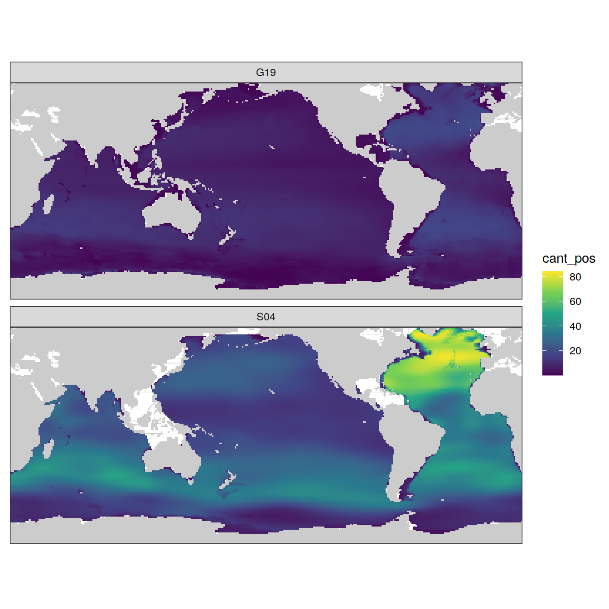

Anthropogenic CO2 from 1994 to 2007
Jens Daniel Müller
07 July, 2021
Last updated: 2021-07-07
Checks: 7 0
Knit directory: emlr_obs_preprocessing/
This reproducible R Markdown analysis was created with workflowr (version 1.6.2). The Checks tab describes the reproducibility checks that were applied when the results were created. The Past versions tab lists the development history.
Great! Since the R Markdown file has been committed to the Git repository, you know the exact version of the code that produced these results.
Great job! The global environment was empty. Objects defined in the global environment can affect the analysis in your R Markdown file in unknown ways. For reproduciblity it’s best to always run the code in an empty environment.
The command set.seed(20200707) was run prior to running the code in the R Markdown file. Setting a seed ensures that any results that rely on randomness, e.g. subsampling or permutations, are reproducible.
Great job! Recording the operating system, R version, and package versions is critical for reproducibility.
Nice! There were no cached chunks for this analysis, so you can be confident that you successfully produced the results during this run.
Great job! Using relative paths to the files within your workflowr project makes it easier to run your code on other machines.
Great! You are using Git for version control. Tracking code development and connecting the code version to the results is critical for reproducibility.
The results in this page were generated with repository version 6312bd4. See the Past versions tab to see a history of the changes made to the R Markdown and HTML files.
Note that you need to be careful to ensure that all relevant files for the analysis have been committed to Git prior to generating the results (you can use wflow_publish or wflow_git_commit). workflowr only checks the R Markdown file, but you know if there are other scripts or data files that it depends on. Below is the status of the Git repository when the results were generated:
Ignored files:
Ignored: .Rhistory
Ignored: .Rproj.user/
Ignored: data/
Unstaged changes:
Modified: README.md
Modified: analysis/_site.yml
Deleted: analysis/read_Gruber_2019_Cant.Rmd
Deleted: analysis/read_Sabine_2004_Cant.Rmd
Modified: code/Workflowr_project_managment.R
Note that any generated files, e.g. HTML, png, CSS, etc., are not included in this status report because it is ok for generated content to have uncommitted changes.
These are the previous versions of the repository in which changes were made to the R Markdown (analysis/read_Sabine_2004.Rmd) and HTML (docs/read_Sabine_2004.html) files. If you’ve configured a remote Git repository (see ?wflow_git_remote), click on the hyperlinks in the table below to view the files as they were in that past version.
| File | Version | Author | Date | Message |
|---|---|---|---|---|
| html | 6312bd4 | jens-daniel-mueller | 2021-07-07 | Build site. |
| Rmd | 4905409 | jens-daniel-mueller | 2021-07-07 | rerun with new setup_obs.Rmd file |
| html | 58bc706 | jens-daniel-mueller | 2021-07-06 | Build site. |
| Rmd | 0db89e1 | jens-daniel-mueller | 2021-07-06 | rerun with revised variable names |
path_sabine_2004 <- "/nfs/kryo/work/updata/glodapv1_1/GLODAP_gridded.data/"
path_preprocessing <- paste(path_root, "/observations/preprocessing/", sep = "")library(marelac)Error in get(genname, envir = envir) : object 'testthat_print' not found1 Data source
- Anthropogenic CO2 estimates (1800-1994) by Sabine et al. (2004) downloaded in August 2020 from NOAA/NCEI Ocean Carbon Data System (OCADS)
2 Read nc files
# read text files
AnthCO2_data <-
read_csv(
paste(path_sabine_2004,
"AnthCO2.data/AnthCO2.data.txt",
sep = ""),
col_names = FALSE,
na = "-999",
col_types = list(.default = "d")
)
# read respective depth layers and convert to vector
Depth_centers <-
read_file(paste(path_sabine_2004,
"Depth.centers.txt",
sep = ""))
Depth_centers <- Depth_centers %>%
str_split(",") %>%
as_vector()
# read respective latitudes and convert to vector
Lat_centers <-
read_file(paste(path_sabine_2004, "Lat.centers.txt",
sep = ""))
Lat_centers <- Lat_centers %>%
str_split(",") %>%
as_vector()
# read respective longitudes and convert to vector
Long_centers <-
read_file(paste(path_sabine_2004, "Long.centers.txt",
sep = ""))
Long_centers <- Long_centers %>%
str_split(",") %>%
as_vector()
# match lon, lat and depth vectors with Cant value file
names(AnthCO2_data) <- Lat_centers
Long_Depth <-
expand_grid(depth = Depth_centers, lon = Long_centers) %>%
mutate(lon = as.numeric(lon),
depth = as.numeric(depth))
tcant_3d <- bind_cols(AnthCO2_data, Long_Depth)
# adjust file dimensions
tcant_3d <- tcant_3d %>%
pivot_longer(1:180, names_to = "lat", values_to = "tcant") %>%
mutate(lat = as.numeric(lat))
tcant_3d <- tcant_3d %>%
drop_na()
# harmonize coordinates
tcant_3d <- tcant_3d %>%
mutate(lon = if_else(lon < 20, lon + 360, lon))
rm(AnthCO2_data,
Long_Depth,
Depth_centers,
Lat_centers,
Long_centers)3 Apply basin mask
# use only three basin to assign general basin mask
# ie this is not specific to the MLR fitting
basinmask <- basinmask %>%
filter(MLR_basins == "2") %>%
select(lat, lon, basin_AIP)
tcant_3d <- inner_join(tcant_3d, basinmask)4 Calculation
4.1 Column inventory
tcant_3d <- tcant_3d %>%
mutate(tcant_pos = if_else(tcant <= 0, 0, tcant))
tcant_inv_layers <- m_tcant_inv(tcant_3d)
tcant_inv <- tcant_inv_layers %>%
filter(inv_depth == params_global$inventory_depth_standard)4.2 Zonal mean section
tcant_zonal <- m_zonal_mean_sd(tcant_3d)5 Plots
5.1 Inventory map
p_map_cant_inv(
df = tcant_inv,
var = "tcant_pos",
breaks = seq(0,max(tcant_inv$tcant_pos),5))
| Version | Author | Date |
|---|---|---|
| 58bc706 | jens-daniel-mueller | 2021-07-06 |
5.2 Horizontal plane maps
p_map_climatology(
df = tcant_3d,
var = "tcant",
col = "divergent")
| Version | Author | Date |
|---|---|---|
| 58bc706 | jens-daniel-mueller | 2021-07-06 |
5.3 Global section
p_section_global(
df = tcant_3d,
var = "tcant",
col = "divergent")
| Version | Author | Date |
|---|---|---|
| 58bc706 | jens-daniel-mueller | 2021-07-06 |
5.4 Sections at regular longitudes
p_section_climatology_regular(
df = tcant_3d,
var = "tcant",
col = "divergent")
| Version | Author | Date |
|---|---|---|
| 58bc706 | jens-daniel-mueller | 2021-07-06 |
5.5 Write files
tcant_3d %>%
write_csv(paste(path_preprocessing,
"S04_tcant_3d.csv", sep = ""))
tcant_inv %>%
write_csv(paste(path_preprocessing,
"S04_tcant_inv.csv", sep = ""))
tcant_zonal %>%
write_csv(paste(path_preprocessing,
"S04_tcant_zonal.csv", sep = ""))6 Anomalous changes
tcant_inv_S04 <- tcant_inv
dcant_inv_G19 <- read_csv(paste(path_preprocessing,
"G19_dcant_inv.csv", sep = ""))7 Comparison of previous estimates
Cant inventory estimates of S04 (Sabine et al, 2004) and G19 (Gruber et al, 2019) were compared.
7.1 Merge data sets
cant_inv <- full_join(dcant_inv_G19 %>%
mutate(estimate = "G19") %>%
rename(cant_pos = dcant_pos) %>%
select(-dcant),
tcant_inv_S04 %>%
mutate(estimate = "S04") %>%
rename(cant_pos = tcant_pos) %>%
select(-tcant))
rm(dcant_inv_G19, tcant_inv_S04)7.2 Inventory maps
Spanning different time periods, the Cant inventories differ in magnitude. Please note, that we refer to cant_pos here, but strictly speaking we compare dcant and tcant.
map +
geom_raster(data = cant_inv,
aes(lon, lat, fill = cant_pos)) +
scale_fill_viridis_c() +
facet_wrap( ~ estimate, ncol = 1) +
theme(
axis.title = element_blank(),
axis.text = element_blank(),
axis.ticks = element_blank()
)
| Version | Author | Date |
|---|---|---|
| 6312bd4 | jens-daniel-mueller | 2021-07-07 |
7.3 Cant budgets
Global Cant inventories were estimated in Pg-C. Please note that here we only added positive Cant values in the upper m and do not apply additional corrections for areas not covered.
cant_inv <- cant_inv %>%
mutate(surface_area = earth_surf(lat, lon),
cant_pos_grid = cant_pos*surface_area)
cant_inv_budget <- cant_inv %>%
group_by(estimate, basin_AIP) %>%
summarise(cant_pos_total = sum(cant_pos_grid)*12*1e-15,
cant_pos_total = round(cant_pos_total,1)) %>%
ungroup() %>%
pivot_wider(values_from = cant_pos_total, names_from = basin_AIP) %>%
mutate(total = Atlantic + Indian + Pacific)
cant_inv_budget# A tibble: 2 x 5
estimate Atlantic Indian Pacific total
<chr> <dbl> <dbl> <dbl> <dbl>
1 G19 11 7.1 13.4 31.5
2 S04 39.6 23.4 41.4 104. 7.4 Relative inventories
cant_inv_wide <- cant_inv %>%
pivot_wider(values_from = c(cant_pos, cant_pos_grid),
names_from = estimate)
cant_inv_wide <- cant_inv_wide %>%
drop_na() %>%
mutate(G19_rel = cant_pos_grid_G19 / sum(cant_pos_grid_G19),
S04_rel = cant_pos_grid_S04 / sum(cant_pos_grid_S04),
cant_ratio_rel = G19_rel / S04_rel)
cant_inv_rel <- cant_inv_wide %>%
pivot_longer(
cols = c(G19_rel, S04_rel),
names_to = "estimate",
values_to = "cant_pos_rel"
)map +
geom_raster(data = cant_inv_rel,
aes(lon, lat, fill = cant_pos_rel*100)) +
scale_fill_viridis_c() +
facet_wrap( ~ estimate, ncol = 1) +
theme(
axis.title = element_blank(),
axis.text = element_blank(),
axis.ticks = element_blank()
)
| Version | Author | Date |
|---|---|---|
| 6312bd4 | jens-daniel-mueller | 2021-07-07 |
7.5 Relative inventory ratios
map +
geom_contour_filled(data = cant_inv_wide %>%
filter(cant_ratio_rel < 10,
cant_ratio_rel > 0.1),
aes(lon, lat, z = log10(cant_ratio_rel))) +
coord_quickmap(expand = 0) +
scale_fill_brewer(palette = "RdBu", direction = -1) +
labs(title = "Cant inventory distribution | 1994-2007 vs preind-1994",
subtitle = "Log ratio of relative contributions to total inventory") +
theme(
axis.title = element_blank(),
axis.text = element_blank(),
axis.ticks = element_blank(),
legend.title = element_blank()
)
| Version | Author | Date |
|---|---|---|
| 6312bd4 | jens-daniel-mueller | 2021-07-07 |
sessionInfo()R version 4.0.3 (2020-10-10)
Platform: x86_64-pc-linux-gnu (64-bit)
Running under: openSUSE Leap 15.2
Matrix products: default
BLAS: /usr/local/R-4.0.3/lib64/R/lib/libRblas.so
LAPACK: /usr/local/R-4.0.3/lib64/R/lib/libRlapack.so
locale:
[1] LC_CTYPE=en_US.UTF-8 LC_NUMERIC=C
[3] LC_TIME=en_US.UTF-8 LC_COLLATE=en_US.UTF-8
[5] LC_MONETARY=en_US.UTF-8 LC_MESSAGES=en_US.UTF-8
[7] LC_PAPER=en_US.UTF-8 LC_NAME=C
[9] LC_ADDRESS=C LC_TELEPHONE=C
[11] LC_MEASUREMENT=en_US.UTF-8 LC_IDENTIFICATION=C
attached base packages:
[1] stats graphics grDevices utils datasets methods base
other attached packages:
[1] marelac_2.1.10 shape_1.4.5 ggforce_0.3.3 metR_0.9.0
[5] scico_1.2.0 patchwork_1.1.1 collapse_1.5.0 forcats_0.5.0
[9] stringr_1.4.0 dplyr_1.0.5 purrr_0.3.4 readr_1.4.0
[13] tidyr_1.1.2 tibble_3.0.4 ggplot2_3.3.3 tidyverse_1.3.0
[17] workflowr_1.6.2
loaded via a namespace (and not attached):
[1] fs_1.5.0 lubridate_1.7.9 gsw_1.0-5
[4] RColorBrewer_1.1-2 httr_1.4.2 rprojroot_2.0.2
[7] tools_4.0.3 backports_1.1.10 utf8_1.1.4
[10] R6_2.5.0 DBI_1.1.0 colorspace_1.4-1
[13] withr_2.3.0 tidyselect_1.1.0 compiler_4.0.3
[16] git2r_0.27.1 cli_2.1.0 rvest_0.3.6
[19] xml2_1.3.2 isoband_0.2.2 labeling_0.4.2
[22] scales_1.1.1 checkmate_2.0.0 digest_0.6.27
[25] rmarkdown_2.5 oce_1.2-0 pkgconfig_2.0.3
[28] htmltools_0.5.0 dbplyr_1.4.4 rlang_0.4.10
[31] readxl_1.3.1 rstudioapi_0.11 farver_2.0.3
[34] generics_0.0.2 jsonlite_1.7.1 magrittr_1.5
[37] Matrix_1.2-18 Rcpp_1.0.5 munsell_0.5.0
[40] fansi_0.4.1 lifecycle_1.0.0 stringi_1.5.3
[43] whisker_0.4 yaml_2.2.1 MASS_7.3-53
[46] grid_4.0.3 blob_1.2.1 parallel_4.0.3
[49] promises_1.1.1 crayon_1.3.4 lattice_0.20-41
[52] haven_2.3.1 hms_0.5.3 seacarb_3.2.14
[55] knitr_1.30 pillar_1.4.7 reprex_0.3.0
[58] glue_1.4.2 evaluate_0.14 RcppArmadillo_0.10.1.2.0
[61] data.table_1.13.2 modelr_0.1.8 vctrs_0.3.5
[64] tweenr_1.0.2 httpuv_1.5.4 testthat_2.3.2
[67] cellranger_1.1.0 gtable_0.3.0 polyclip_1.10-0
[70] assertthat_0.2.1 xfun_0.18 broom_0.7.5
[73] RcppEigen_0.3.3.7.0 later_1.1.0.1 viridisLite_0.3.0
[76] ellipsis_0.3.1